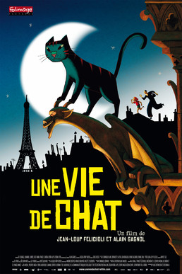

Jean-Loup Felicioli
2010
70 minutes
You like cats. You like Paris. You like hand-drawn animation. None of those facts makes you like this animated film as much as you thought you would. It has its moments, but the plot isn't meaty enough to really hold your attention. It's not terrible, it's just kind of blah.
Some of your favorite animations have been about cats. You particularly enjoyed the Garfield and Heathcliff cartoons when you were a kid. No one can take this away from you, not even the live action abominations from recent years have spoiled that enjoyment for you. The cartoons were well-scripted and well-voiced, and even the spinoff characters from U.S. Acres and The Cat-illac Cats expanded the world in welcome ways.
You've been both baffled and entertained by the increasingly surreal and deranged takeoffs on both of these properties. Garfield eventually spawned some philosophical absurdities such as Garfield without Garfield, which mostly consist of Jon Arbuckle talking to himself. There are also the beautifully grotesque Fatal Farms videos from Youtube, which re-enact a Garfield strip followed by a music video for some famous popular song based on the imagery from the strip. You also know (not firsthand) of a local dominatrix and software developer, very likely solidly "on the spectrum" who considers herself a Garfield domme. She has produced at least one crude freeware Garfield computer dating simulator in which you are supposed to romance Garfield. (Hint: when given a choice of restaurant to go to, pick Olive Garden. Garfield loves lasagna.)
The latest development in this tradition is the latest conceptual intellectual property abuse of the Heathcliff daily strips in the newspaper. Heathcliff has now degenerated into a series of opaque in-jokes involving his fixation on meat and driving hams around town and a bubble gum that can lift him into the sky when he blows bubbles. These in-jokes are beaten like a drum to the point of not being even mildly funny but also conceptually hilarious to the point where you feel forced to laugh rather than complain because of the very absurdity. It's a neverending brick joke that makes you a fool for laughing too soon or too late or thinking about it too hard.
Time to choose something different: